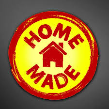

Bun venit pe Home Made!
Acesta este un site dedicat schimbului de bunuri între utilizatori. Aici poți găsi lucruri de care ai nevoie sau poți oferi obiecte pe care nu le mai folosești. Începe să explorezi și să contribui la comunitatea noastră!
Despre acest site
Acest site a fost creat cu scopul de a facilita schimbul de bunuri între utilizatori, într-un mod sigur, eficient și organizat. După ce se autentifică, fiecare utilizator are posibilitatea să posteze anunțuri cu obiectele pe care dorește să le ofere sau să le primească, creând astfel o comunitate activă bazată pe încredere reciprocă și colaborare.
Platforma este intuitivă și ușor de utilizat, oferind funcționalități precum filtrarea bunurilor pe categorii, contact direct între utilizatori prin mesagerie privată, și un sistem de evaluare care ajută la menținerea unui climat sigur și transparent.
Obiectivul principal este de a încuraja reciclarea și reutilizarea produselor, promovând un stil de viață sustenabil și reducerea risipei. Indiferent dacă ai lucruri de care nu mai ai nevoie sau cauți un obiect util fără costuri, acest site îți oferă o soluție practică și comunitară.
Servicii
Aceasta pagina web se ocupa strict doar cu schimbul de bunuri.